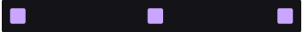
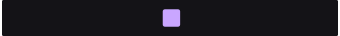
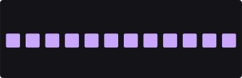
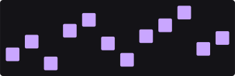
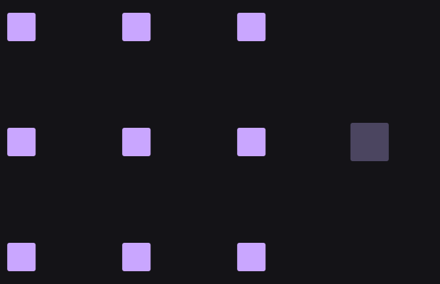
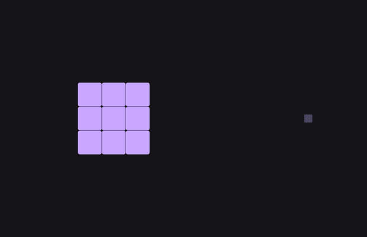

Os sete tutoriais anteriores fizeram coisas às peças: puseram-nas na tela, fizeram-nas andar, dobraram-nas, escolheram quem é afetado, entregaram-nas a uma lei, deram-lhes um número que manda em tudo e uma cara. Falta a pergunta que vem antes de todas: de onde é que as peças vêm.
Todo cartão deste grupo tem uma coisa em comum: ele não recebe peças — ele fá-las. É sempre o primeiro do caminho. O que muda de um para o outro é a partir de quê:
| fileira | a pergunta | o par |
|---|---|---|
| cima | e se a coisa for algo que eu fiz? | Text contra Shape |
| meio | e se for algo que eu já tenho? | Table sozinho contra Table + uma coluna |
| baixo | e se for algo que a cena dá? | Emitter contra Camera |
Cole isto inteiro num terminal. Na primeira vez ele compila (alguns minutos); depois abre em segundos.
À esquerda está uma palavra. O cartão Text entrega uma peça por letra — e a partir daí cada letra é uma peça como qualquer outra: pode ser espalhada, animada, colorida.
À direita está uma forma. O cartão Shape entrega uma peça — a forma inteira é uma coisa. É a diferença que decide tudo o resto: o que você vai poder fazer a seguir depende de quantas peças a fonte lhe deu.

Text
ShapeText: a palavra e escreva outra coisa na linha
Text.
Shape: a forma e mude a linha Shape.
Os dois panos do meio leem o mesmo ficheiro — uma tabela com doze linhas e quatro colunas. O cartão Table entrega uma peça por linha, e põe-nas em fila.
À direita há um cartão a mais: o Drive, alimentado por uma
coluna do ficheiro. A altura de cada peça deixa de ser igual e passa a ser o número que
está escrito naquela linha. A fila vira um gráfico — e não escrevemos um único
número.

Table
+ a coluna «vendas»O ficheiro esta' aqui:), mude um número da coluna
vendas e guarde.
Table: o grafico, carregue em Table File e
escolha o mesmo ficheiro outra vez.
Drive.À esquerda, as peças nascem: o cartão Emitter faz partículas a um ritmo, cada uma vive um tempo e desaparece. Ninguém as pôs lá — elas são o que a cena está a fazer agora.
À direita, a fonte é a própria vista: o cartão Camera entrega onde a câmara está, quanto ela mostra, e quantos pixels de ecrã vale uma unidade de mundo. Com esse último número, as nove peças pedem 40 pixels — e passam a medir 40 pixels esteja o zoom onde estiver.

com zoom
sem zoomDrive daquele pano.Drive: o tamanho no ecra e arraste
Scale.
Text: a palavra, mexa em Tracking.
Emitter a um campo (o Falloff do tutorial 4).
Table a um ficheiro seu — qualquer texto com vírgulas e uma
primeira linha de nomes serve.
São sete cartões. A cena mostra cinco; os outros dois têm cena própria, porque pedem coisas que esta não tem.
| quando você quer… | procure por |
|---|---|
| uma forma que você escolhe no cartão | Shape |
| um texto, uma peça por letra | Text |
| as linhas de um ficheiro de dados | Table |
| uma planta que cresce por regras | L-System — tem cena
própria, e um manual só dele |
| a aparência de um objeto da cena (uma imagem, um desenho, uma animação) | Object — ele vai buscá-lo pelo nome que está na Hierarquia |
| partículas a nascer e morrer | Emitter |
| onde a câmara está e quanto ela mostra | Camera |
Object é a ponte para o resto do programa. Tudo o que
você desenhar, pintar ou animar noutro sítio do PH2D pode entrar aqui pelo nome e ser
multiplicado, espalhado e animado como uma peça. É por isso que ele não está nesta cena: ele
precisa de uma coisa na Hierarquia, e esta cena é só um caminho de cartões.Uma fonte cobra em dois sítios, e só um deles é óbvio: fazer as peças, e levá-las para a placa gráfica. O segundo é o que faz um ficheiro grande pesar mesmo quando nada muda — e foi o que esta volta de trabalho corrigiu.
| uma tabela de um milhão de linhas, por quadro | antes | agora |
|---|---|---|
| voltar a ler a tabela | 6,05 ms | 0,01 ms |
| preparar e enviar para a placa | 3,57 ms | 1,61 ms |
| o quadro inteiro | 9,62 ms | 1,62 ms |
a mesma quantidade de peças feita por um Grid |
1,36 ms | 1,41 ms |
Drive.Text não está a ser relido.